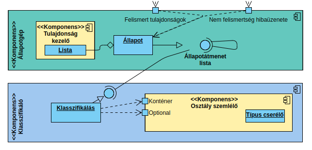
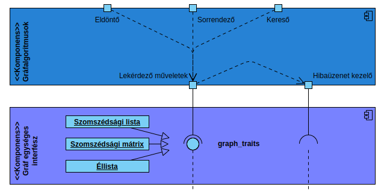

Modern C++ gráf könyvtár
Nincs standardizált gráf
Persze létezik...
boost::graph [1]
NGraph [2]
CXXGraph [3]
varia [4]
LEMON [5]
Probléma
Nem intuitív
Nem rugalmas, vagy csak bonyolultan
Vagy formátumból, vagy egyesével lehet felépíteni
Nem használ fel fordítás idejű adatot
Embedded környezetben nem használható
Elavult, új szabványokat nem támogat
Könyvtáram
bxlx::graph::topological_sort(g, it);


Demó
Köszönöm a figyelmet!
[1] https://www.boost.org/doc/libs/1_82_0/libs/graph/doc/index.html
[2] https://math.nist.gov/~RPozo/ngraph/
[3] https://zigrazor.github.io/CXXGraph/
[4] https://gitlab.com/MartenBE/varia/
[5] https://lemon.cs.elte.hu/